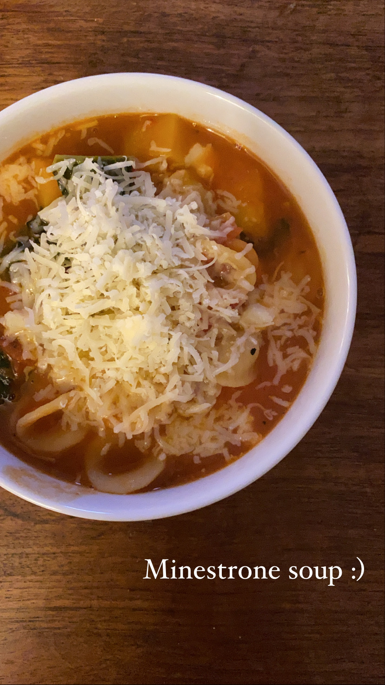

HOME
Minestrone Soup

Description
Minestrone is a thick soup of Italian origin made with vegetables, often with the addition of pasta or rice,
sometimes both. Common ingredients include beans, onions, celery, carrots, stock, croutons, and tomatoes.
Ingredients
- 4 tablespoons extra-virgin olive oil, divided
- 1 medium yellow onion, chopped
- 2 medium carrots, peeled and chopped
- 2 medium ribs celery, chopped
- ¼ cup tomato paste
- 2 cups chopped seasonal vegetables (potatoes, yellow squash, zucchini, butternut squash, green beans or peas
all work)
- 4 cloves garlic, pressed or minced
- ½ teaspoon dried oregano
- ½ teaspoon dried thyme
- 1 large can (28 ounces) diced tomatoes, with their liquid (or 2 small 15-ounce cans)
- 4 cups (32 ounces) vegetable broth
- 2 cups water
- 1 teaspoon fine sea salt
- 2 bay leaves
- Pinch of red pepper flakes
- Freshly ground black pepper
- 1 cup whole grain orecchiette, elbow or small shell pasta
- 1 can (15 ounces) Great Northern beans or cannellini beans, rinsed and drained, or 1 ½ cups cooked beans
- 2 cups baby spinach, chopped kale or chopped collard greens
- 2 teaspoons lemon juice
- Freshly grated Parmesan cheese, for garnishing (optional)